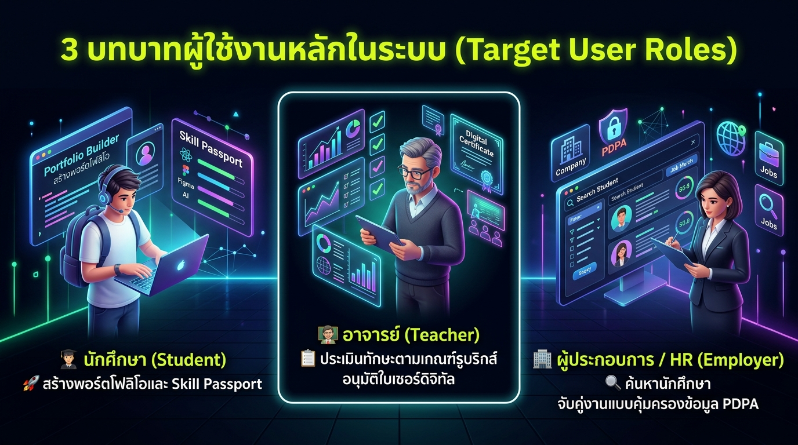
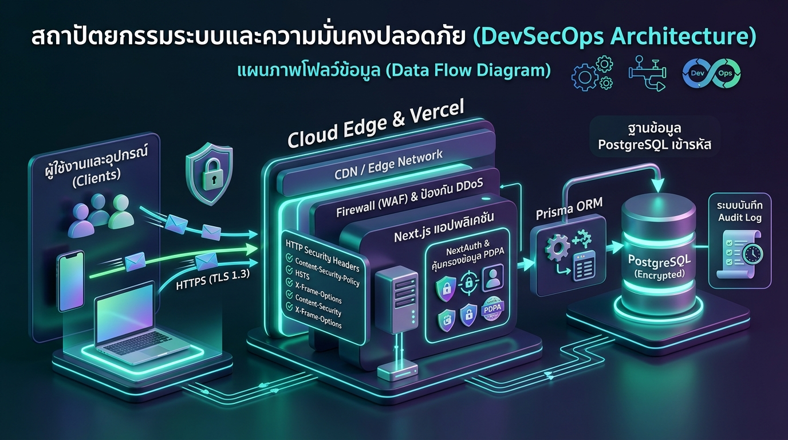
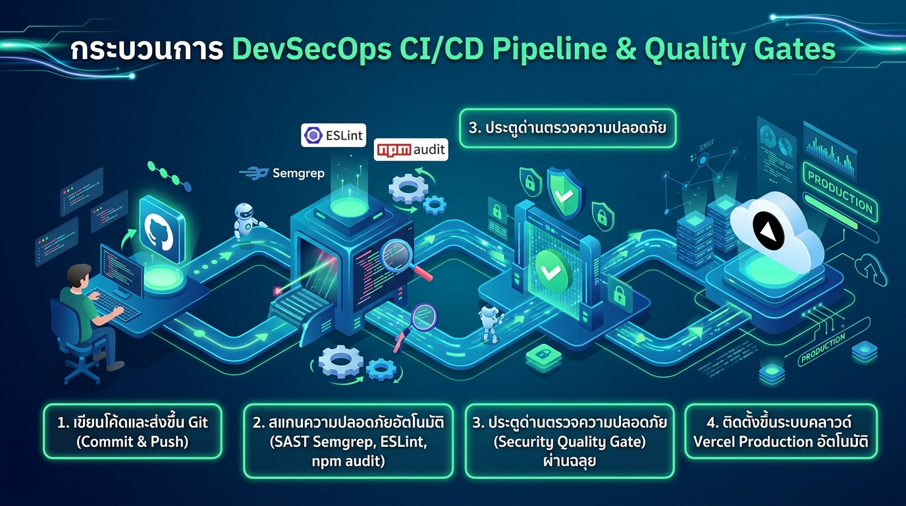
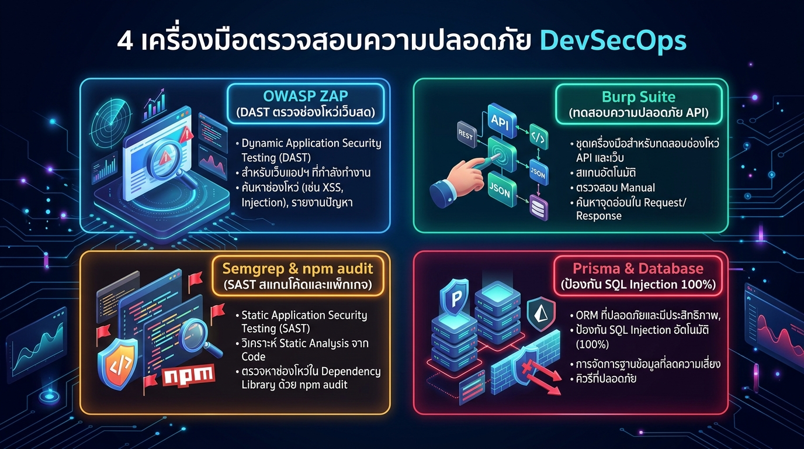

ระบบแฟ้มสะสมผลงานดิจิทัล เครือข่ายวิชาชีพนักศึกษา และการรับรองทักษะด้วย Cryptographic Integrity ตามแนวคิด DevSecOps


+─────────────────────────────────────────────────────────────+ | SYSTEM ARCHITECTURE & TRUST BOUNDARY | +─────────────────────────────────────────────────────────────+ | [Clients / Web Browsers] | | │ HTTPS (TLS 1.3) | | ▼ Security Headers (CSP, HSTS, X-Frame-Options) | | [Vercel Edge Network / Reverse Proxy / Global CDN] | | │ Forward Request | | ▼ | | ┌───────────────────────────────────────────────────────┐ | | │ NEXT.JS 16 APPLICATION RUNTIME (Serverless Node.js) │ | | │ • React 19 UI & Tailwind CSS v4 Responsive │ | | │ • NextAuth.js v4 (HttpOnly JWT Cookie, Multi-RBAC) │ | | │ • PDPA Privacy Masking Engine (GPA & Phone Filter) │ | | │ • SHA-256 Digital Certificate Generator │ | | │ • Strict Regex Input Sanitization │ | | └───────────────────────────┬───────────────────────────┘ | | │ Prisma ORM (Prepared Stmt) | | ▼ | | ┌───────────────────────────────────────────────────────┐ | | │ DATABASE LAYER (Dual Database Mode) │ | | │ • SQLite (Dev) / PostgreSQL on Supabase (Cloud) │ | | │ • AuditLog Table & Least Privilege DB User │ | | └───────────────────────────────────────────────────────┘ | +─────────────────────────────────────────────────────────────+
.env เก็บค่าเฉพาะเครื่องตนเอง และจัดทำ .env.example โดยไม่มี Secret จริง.gitignore ละเว้น .env, *.db, node_modules/ 100%DATABASE_URL, NEXTAUTH_SECRET, GITHUB_SECRET บน Vercel Project Settings แบบเข้ารหัสp/secrets ใน CI Pipeline สแกนจับรหัสผ่านก่อนเข้าสู่ Repo+───────────────────────────────────────────────────────────+ | ENTITY RELATIONSHIP DIAGRAM | +───────────────────────────────────────────────────────────+ | [User] 1 ──────── 1 [Portfolio] 1 ─────── N [Skill] | | │ │ 1 ─────── N [Project] | | │ │ 1 ─────── N [Certificate]| | ├────── 1 ── N [Account] (SHA-256) | | ├────── 1 ── N [Session] | | ├────── 1 ── N [AuditLog] | | ├────── 1 ── N [Course] 1 ─── N [Enrollment] | | ├────── 1 ── N [Post] 1 ───── N [PostLike] | | │ 1 ───── N [PostComment] | +───────────────────────────────────────────────────────────+
hashValue ในตาราง Certificate ใช้รับรองความถูกต้องและป้องกันปลอมแปลงAuditLog เก็บบันทึกประวัติ Action, User, Timestamp, และ IP Address ทุกครั้งที่มีการแก้ไขข้อมูลสำคัญ081-XXX-XXXX| User Flow ขั้นตอน | สิ่งที่แสดงให้ผู้สอนเห็นบนระบบจริง | มาตรการความมั่นคงปลอดภัย |
|---|---|---|
| 1. ล็อกอิน & แยกสิทธิ์ | ปุ่ม Quick Login 3 บทบาท (Student, Teacher, Employer) | HttpOnly Session Cookie, CSRF Token |
| 2. นักศึกษา & Skill Passport | แสดงทักษะที่ Verified, ใบเซอร์ดิจิทัล SHA-256, โพสต์ฟีด | Cryptographic Hashing, Input Sanitization |
| 3. อาจารย์ประเมิน & ออกใบเซอร์ | ให้คะแนนตามเกณฑ์รูบริกส์, ออกใบเซอร์ดิจิทัล, ปุ่ม Revoke Cert | Server-side Role Check, AuditLog Entry |
| 4. นายจ้าง & Matchmaking | ค้นหานักศึกษาตามทักษะที่ต้องการ, แสดงผลลัพธ์แบบ Masked | PDPA Data Masking (เบอร์โทร & GPA) |
| 5. ตรวจสอบใบรับรอง (/verify) | นำรหัส Hash หรือ QR Code ตรวจสอบความถูกต้องของใบเซอร์ | Tamper-proof Digital Signature Check |
| 6. จัดการเมื่อไม่มีสิทธิ์ & ข้อผิดพลาด | ทดสอบเข้าหน้า /teacher ขณะเป็น Student → เด้ง 403 |
Generic Error Message (ไม่พ่น Stack Trace) |

[ 1. Plan & Code ] --> [ 2. Local Review & .gitignore ]
VS Code Secret Protection (.env)
│
▼
[ 4. GitHub Actions CI ] <-- [ 3. Git Push / PR ]
• Prisma Validate Branch Strategy:
• ESLint Static Scan feature/* -> main
• npm audit (--high) │
• Semgrep SAST ▼
[ 5. Vercel Cloud CD ]
Automated Deploy
│
▼
[ 6. Production Live ]
HTTPS + Edge Security
main ป้องกันการ Push โดยตรง ต้องผ่าน Pull Request (PR)feat/security-remediations, fix/headers.env และกุญแจลับหลุดขึ้น Repository ด้วย .gitignorenpm ci ตาม package-lock.jsonsecurity-audit, secrets, owasp-top-tennpm run buildmain ทันทีmain แล้ว Vercel จะทำการ Deploy ขึ้น Production อัตโนมัติ| รหัส Asset | ทรัพย์สินของระบบ (Asset Name) | ความสำคัญตาม CIA Triad | ภัยคุกคามที่เกี่ยวข้อง (Threats) | ระดับความเสี่ยง |
|---|---|---|---|---|
| A-01 | ข้อมูลส่วนบุคคลนักศึกษา (PDPA) | Confidentiality (สูงมาก) | Data Scraping, GPA & Phone Leakage | Critical (20/25) |
| A-02 | ใบประกาศนียบัตรดิจิทัล & ทักษะ | Integrity (สูงมาก) | Certificate Forgery, Tampering | High (15/25) |
| A-03 | Session Tokens & NextAuth Cookie | Confidentiality / Integrity | Session Hijacking, XSS Token Theft | Critical (20/25) |
| A-04 | ฐานข้อมูล & Audit Logs | Availability & Integrity | SQL Injection, Log Tampering | High (15/25) |
| A-05 | Application REST APIs | Availability & Integrity | Broken Access Control, SSRF | Medium (12/25) |

' OR 1=1 --| ช่องโหว่ที่พบ | สภาพก่อนแก้ไข (Before) | การลงมือแก้ไขโค้ดจริง & ผลลัพธ์ (After) |
|---|---|---|
| 1. ขาด Security Headers (OWASP A05) | ไม่มี CSP, X-Frame-Options เสี่ยงต่อ Clickjacking (ZAP แจ้งเตือน 5 Alerts) | แก้ไข next.config.ts เพิ่ม Security Headers 7 รายการ → ZAP Alerts = 0 รายการ |
| 2. Broken Access Control & PDPA Leak (OWASP A01) | API ส่งข้อมูลเบอร์โทร, GPA และโปรไฟล์ Private ให้ผู้ใช้ภายนอกโดยไม่มีสิทธิ์ | แก้ไข api/portfolio ตรวจ Session + ทำ Data Masking ซ่อน GPA และเบอร์โทร → คุ้มครอง PDPA สำเร็จ |
| 3. Broken Auth & SSRF บน GitHub Proxy (A07 & A10) | ยอมรับรหัสผ่านว่างเปล่า และรับ username ภายนอกโดยไม่ตรวจรูปแบบเสี่ยง SSRF | ปรับปรุง Logic ใน NextAuth + เขียน Regex Whitelist ใน github/route.ts → ป้องกัน Bypass & SSRF 100% |
081-XXX-XXXXb01856a, fe9a97a, เอกสาร evidence/database/ และ evidence/before-after/fix2-sast-security.yml, ติดตั้ง Semgrep SAST, ESLint, npm audit, API Proxy เชื่อม GitHub REST API และ Auth Routenpm audit fix, เพิ่ม Regex Whitelist คัดกรอง GitHub username และปรับปรุงตรรกะตรวจรหัสผ่านใน NextAuthace7cad, b01856a, ไฟล์รายงานใน evidence/sast/ และ evidence/before-after/fix3-security-audit, secrets, owasp-top-tenheaders() ใน next.config.ts, จัดเตรียมชุดข้อมูลจริง 7 บัญชีb567b1c, e31e12f, cbb5079, รายงาน DAST ใน evidence/zap/ และ evidence/before-after/fix1-test@example.com / passwordteacher@example.com / passwordemployer@example.com / password